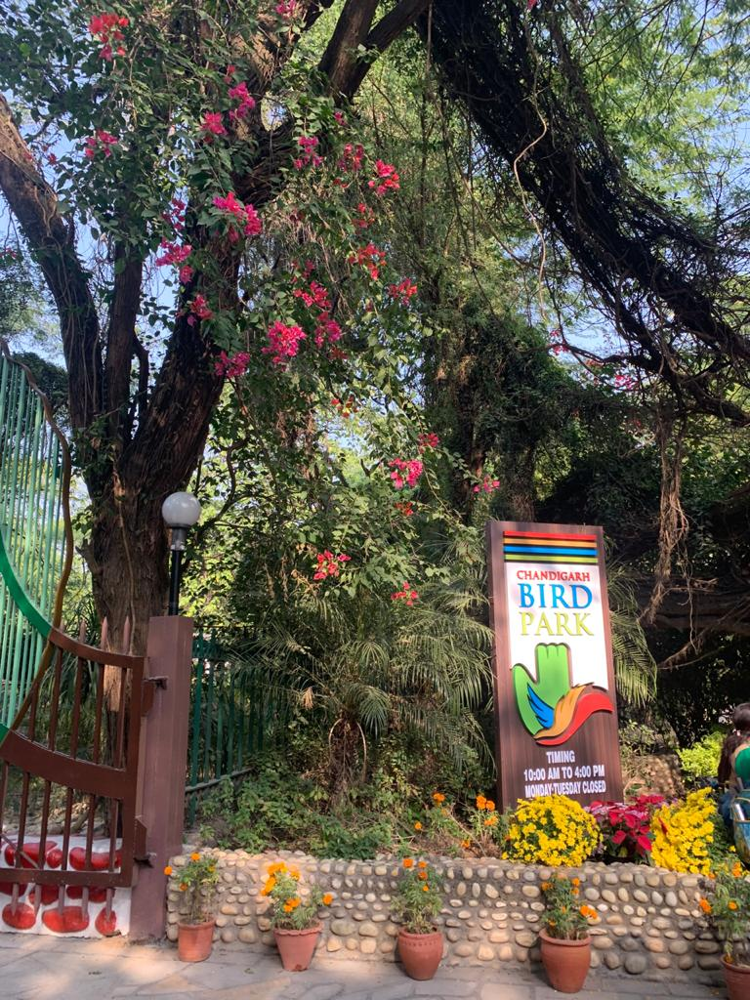

Isn't It Love Out Here? After All Its The Nature!!
1)
Birds are an integral part of the natural world, adding vibrancy and vitality to their surroundings. Their
graceful flight patterns and melodic songs enchant both the casual observer and avid birdwatchers alike.
Birds play essential roles in ecosystems, pollinating flowers and dispersing seeds, thus contributing to
plant diversity. Their diverse array of colors, shapes, and sizes reflects the marvels of evolutionary
adaptation. From majestic raptors soaring high in the sky to tiny hummingbirds darting amongst blossoms,
birds bring a sense of wonder and awe to the tapestry of nature.
2)

Chandigarh Bird Park, located in the heart of the city, is a haven for avian enthusiasts and nature lovers.
Spread over lush greenery, it provides a serene environment for a variety of bird species to thrive. The
park showcases an impressive collection of both native and migratory birds, captivating visitors with their
beauty and diverse plumage. Birdwatchers can spot species like peacocks, parrots, herons, and numerous
waterfowl, creating a delightful spectacle of colors and sounds. With its well-maintained trails and
tranquil ambiance, Chandigarh Bird Park offers a peaceful retreat where visitors can connect with nature and
appreciate the wonders of avian life.
3)
Nature, with its boundless beauty, encompasses a myriad of breathtaking landscapes and awe-inspiring
phenomena. From towering mountains to serene meadows, nature presents a tapestry of diverse ecosystems that
support a wide array of life forms. The soothing whispers of wind through the trees and the gentle babbling
of rivers evoke a sense of tranquility and harmony. Nature's intricate balance is reflected in the intricate
interplay of flora and fauna, each contributing to the delicate web of life. Exploring nature offers an
opportunity to witness the marvels of natural processes and reconnect with the inherent wonder and
resilience of the world around us.
4)
In Chandigarh Bird Park, the behavior of birds is a captivating sight for visitors. The park is home to a
diverse range of bird species, each exhibiting unique behaviors. One can observe birds engaging in intricate
courtship rituals, such as elaborate dances or displays of colorful plumage to attract mates. Many birds can
be seen building nests, diligently collecting materials and constructing intricate structures. Visitors may
witness birds foraging for food, using their specialized beaks or claws to capture prey or gather seeds.
5)
Nature provides a respite from the fast-paced and stressful modern life, offering a calming and rejuvenating
environment for relaxation and mental well-being.Immersion in nature has been shown to reduce anxiety,
improve mood, and enhance cognitive function,
promoting overall mental health.Access to natural environments encourages physical activity and exercise,
contributing to improved physical
fitness and a lower risk of chronic diseases.Nature supports biodiversity and ecosystem services, including
clean air and water, soil fertility, and
climate regulation, essential for the sustainability of our planet.Connecting with nature fosters a sense of
awe, wonder, and appreciation for the beauty and complexity of the
natural world, nurturing a deeper understanding of our place in the web of life.
6)
The mute swan, known for its elegant and graceful presence, is a captivating species of waterfowl. With its
long neck and pure white plumage, it is a symbol of beauty and tranquility. The name "mute" is misleading as
these swans are far from silent, producing a variety of vocalizations including hissing, snorting, and
trumpeting calls. Mute swans are highly territorial, fiercely defending their nesting sites and young from
intruders. They are well-adapted to aquatic habitats, gracefully gliding across lakes and rivers, and are
often found in pairs or small family groups, adding a touch of enchantment to any natural water body they
inhabit.
7)
Birds and nature intertwine to create captivating scenes that captivate our senses. The vibrant plumage of
tropical birds, like the resplendent quetzal or the flamboyant scarlet macaw, adds a splash of color against
lush green backdrops. The melodious songs of songbirds fill the air, creating a symphony that echoes through
forests and meadows. The sight of birds in flight, gliding effortlessly through the sky, showcases the
marvels of adaptation and grace. Nature's beauty is enhanced by the presence of these captivating creatures,
reminding us of the intricate interconnectedness of all living beings. Exploring the harmony between birds
and nature offers a glimpse into the wonders that unfold when wildlife and their habitats coexist in
harmony.
8)
A walk in nature is a transformative experience that rejuvenates both body and mind. As you step onto the
earth's embrace, the gentle rustling of leaves and the sweet fragrance of flora envelop your senses. The
path meanders through towering trees, allowing the dappled sunlight to dance upon the forest floor. Each
step brings a renewed connection with the natural world, as you witness the intricate web of life unfolding
before your eyes. With each inhalation of crisp, fresh air, stress dissipates, and a sense of tranquility
settles within, offering solace and a much-needed respite from the demands of everyday life.
9)
The City Forest in Chandigarh is a green oasis nestled within the urban landscape. Spanning acres of land,
it offers a welcome escape from the bustling city life. The forest is home to a diverse range of flora and
fauna, creating a thriving ecosystem within the city limits. With well-maintained trails and lush
vegetation, it provides an ideal setting for outdoor activities such as walking, jogging, and birdwatching.
The City Forest serves as a haven for residents and visitors alike, fostering a deep appreciation for the
beauty of nature and promoting environmental conservation in an urban setting.
10)
Parrots, known for their vibrant plumage and playful personalities, share a unique and fascinating bond with
trees. These intelligent birds form strong attachments to their arboreal homes, often establishing long-term
roosting and nesting sites within tree hollows. Trees provide shelter and protection for parrots, offering a
safe haven from predators and harsh weather conditions. Parrots also rely on trees for food, as they feed on
fruits, nuts, and seeds found in the tree canopy. Their adept climbing and perching abilities allow them to
navigate the branches with agility, showcasing their close affinity with the tree's structure. The symbiotic
relationship between parrots and trees highlights the vital role of these majestic birds in maintaining the
health and diversity of forest ecosystems.